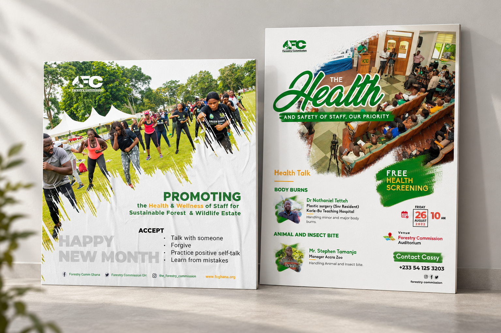
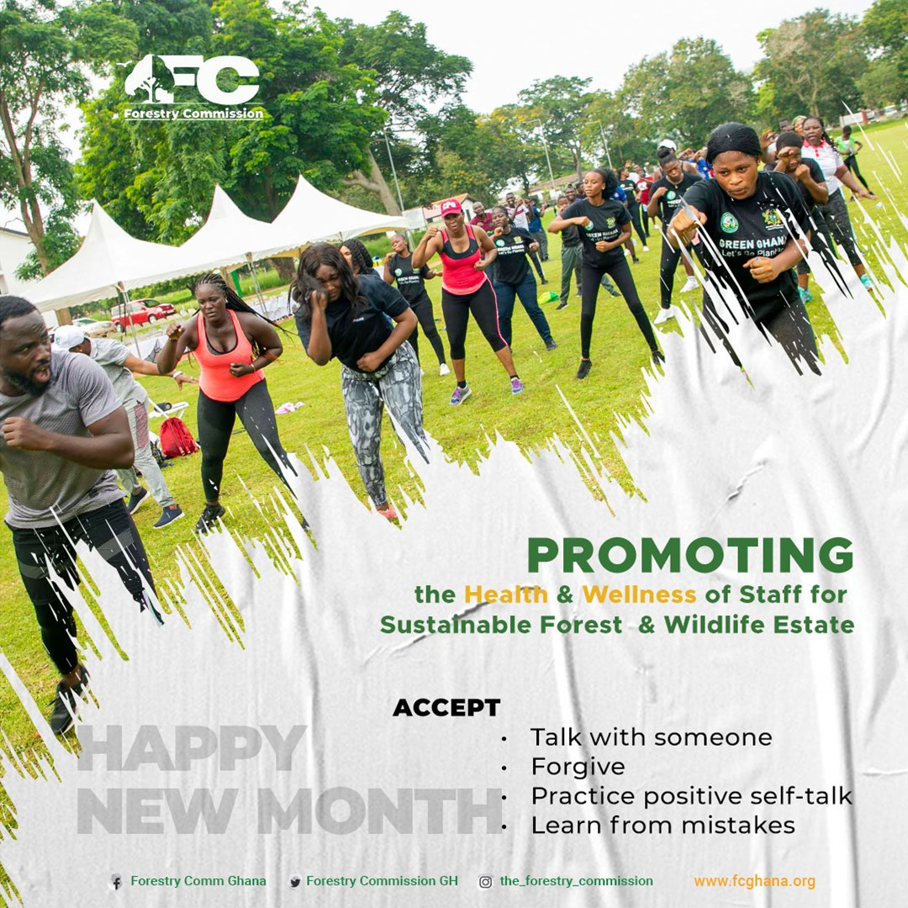
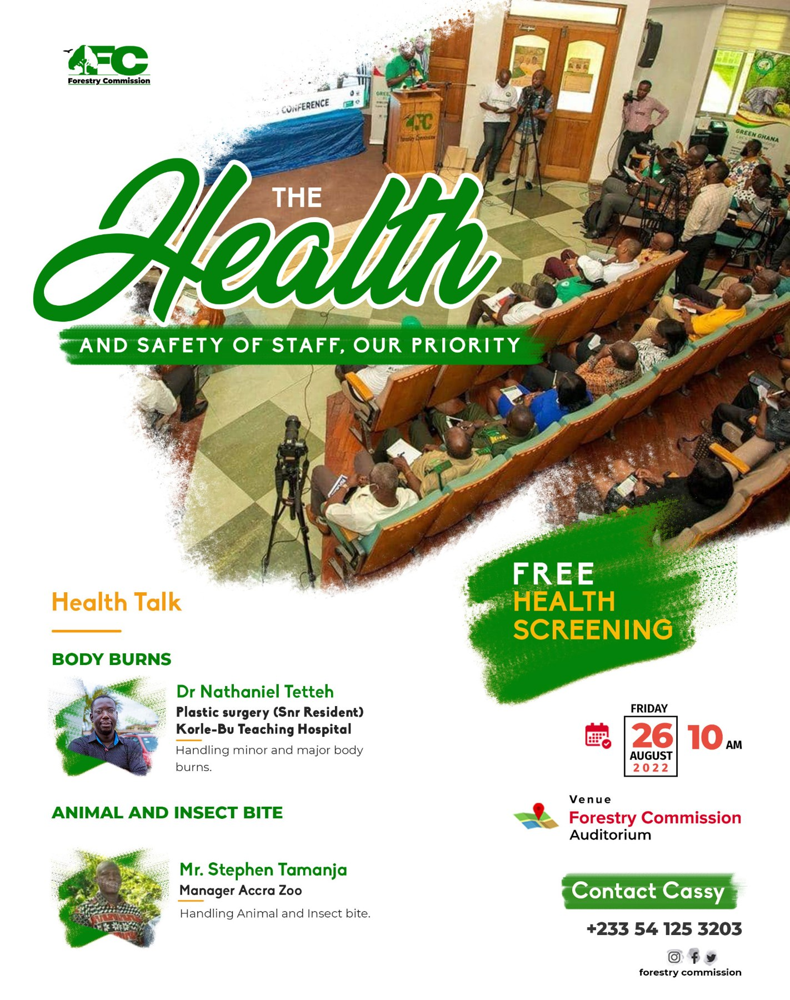
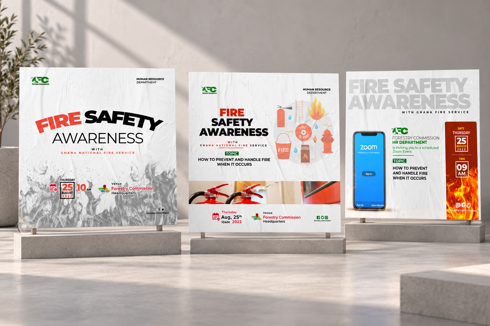
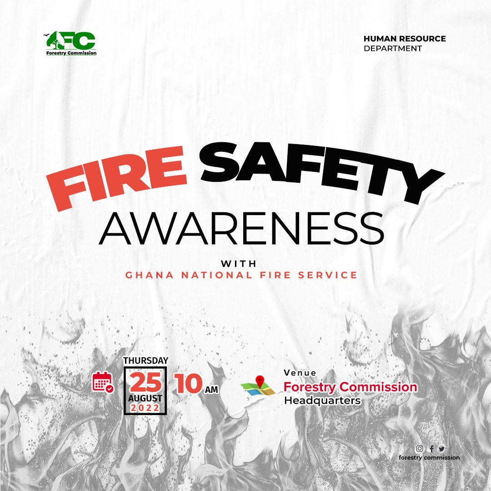
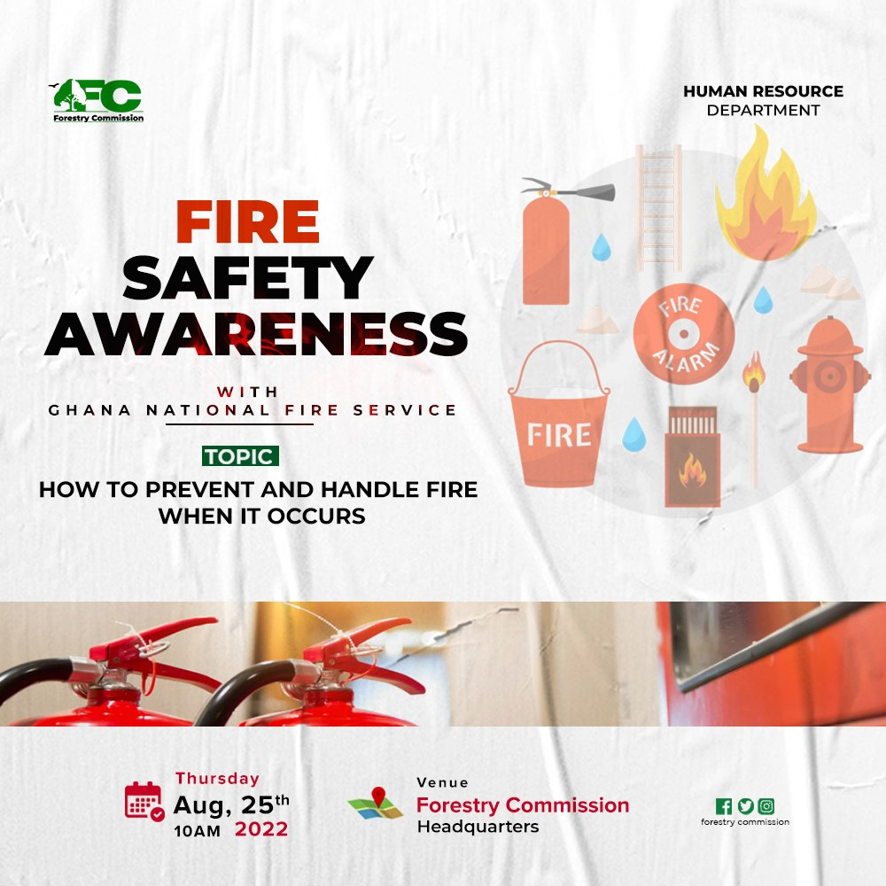
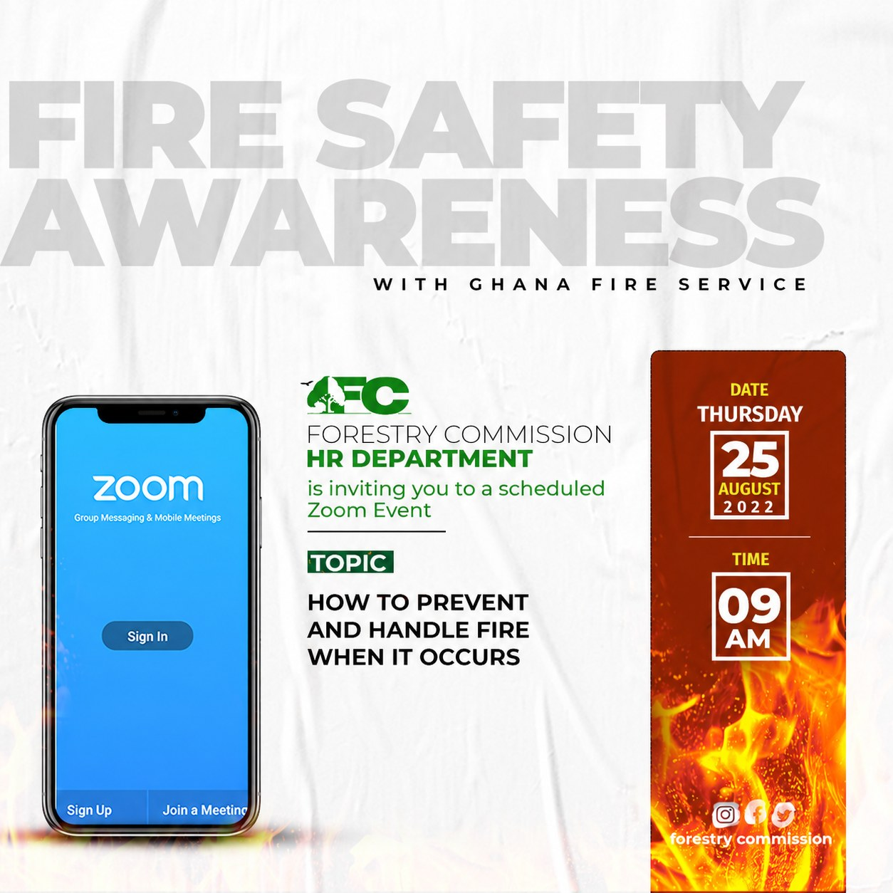

INTERNAL COMMUNICATION / GRAPHIC DESIGN
Design for the people
doing the work.
Alongside conservation campaigns, I designed staff communications covering wellbeing, health screening and fire safety awareness.
A DIFFERENT AUDIENCE
Turning staff messages into clear invitations.
Some of my design work focused on the people within the organisation. These pieces covered staff wellbeing, health screening and fire safety, with each subject needing its own visual treatment.
The health artwork uses a softer green identity and event details. The fire-safety pieces use stronger headlines, fire imagery and practical information about the session. I adapted the artwork for both physical attendance and an online format.
HEALTH & WELLBEING
Supporting the people behind the organisation.

Health & wellbeing
View full size ↗
Staff wellbeing communication
View full size ↗
Health screening event artwork
View full size ↗FIRE SAFETY
One subject, several ways to reach people.

Fire safety communications
View full size ↗
Fire safety awareness artwork
View full size ↗
Fire prevention session artwork
View full size ↗